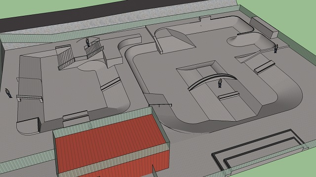
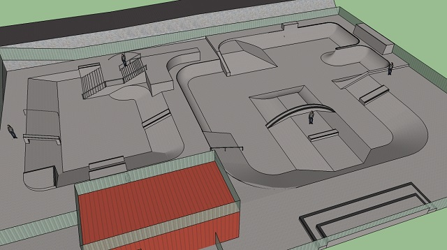

Things I've Dabbled In
- Software development
I've always enjoyed tinkering with gadgets and poking around the deepest levels of settings in the software I use, so programming was a natural next step. I love the way it demands both the ability to solve problems creatively and then the application of those ideas in a logical and systematic fashion.
My day job is as a business software engineer working mostly in PHP; but Pug, Stylus, ES6 Javascript, and Gulp are my preferred stack. Kotlin and Python are my two other favorite languages. I also know my way around mySQL and Java (mostly for Android).


Some of my past projects:
- Making things
Design thinking has always been my mindset. There's just something special about creating something new with your hands, whatever it is... 3D modelling and printing, Lego, basic woodworking, and hopefully electronics as well soon.
Coding is making too :)

 
 - Marketing/PR/events
I graduated from the University of the Philippines with a degree in Business Administration. And while most of my experience afterwards has been in marketing, I'm perfectly comfortable discussing economics, finance, corporate strategy, or management, and have even been called up to draft a contract or two.
I've helped organize an indie-orchestra mashup concert, football tournaments, and an online contest to name a professional basketball team, among many other less interesting things
- Inline skating
I've been at it on and off since 2002 (see my lame 2011-era video footage below), skating parks around the Philippines, Malaysia, China, Singapore, Korea, and Australia along the way.
Founded Elevate Skate Co. a while back, importing gear from shops all over the world. But it's closed now, as nice of a side hustle as it was. I also learned a lot about filming and editing video from being involved here.